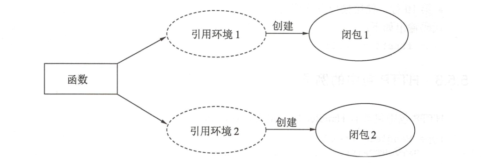

4.3. 闭包¶
闭包是引用了资源变量的函数，被引用的资源变量和函数一同存在，即使已经离开了资源变量的环境也不会 被释放或者删除，在闭包中可以继承使用这个自由变量，因此简单来说：
函数+引用环境=闭包
同一个函数与不同引用环境组合，可以形成不同的示例。如下图所示： 
4.3.1. 1.在闭包内部修改引用的变量¶
闭包对它作用域上部变量的引用可以进行修改，修改引用变量就会对变量进行实际修改。
package main
import "fmt"
func main() {
// 准备一个字符串,用于修改
str := "hello world"
// 创建一个匿名函数
foo := func() {
// 匿名函数中访问str，str被引用到了匿名函数中形成了闭包
str = "hello hujianli"
fmt.Println(str)
}
// 调用匿名函数
foo()
}
//hello hujianli
4.3.2. 2.示例：闭包的记忆效应¶
package main
import "fmt"
func Accumulate(value int) func() int {
// 返回一个闭包
return func() int {
// 累加
value++
return value
}
}
func main() {
// 创建一个累加器，初始值为1
accumulator := Accumulate(1)
// 累加1并打印
fmt.Println(accumulator()) //2
fmt.Println(accumulator()) //3
// 打印累加器的函数地址
fmt.Printf("%p\n", accumulator) //0x49c6b0
// 创建一个累加器，初始值为1
accumulator2 := Accumulate(10)
// 累加1并打印
fmt.Println(accumulator2()) // 11
// 打印累加器的函数地址
fmt.Printf("%p \n", accumulator2) //0x49c6b0
}
每调用一次accumulator都会自动对引用变量进行累加。
4.3.3. 3.示例：闭包实现生成器¶
闭包的记忆效应进程被用于实现类似设计模式中工程模式的生成器。
下面展示一个创建玩家生成器的过程：
package main
import "fmt"
/*
创建一个玩家生成器，输入名称，输出生成器
*/
func palyerGen(name string) func() (string, int) {
// 血量为150
hp := 150
// 返回创建的闭包
return func() (s string, i int) {
// 将变量引用到闭包中
return name, hp
}
}
func main() {
// 创建一个玩家生成器
generator := palyerGen("high noon")
// 返回玩家的名字和血量
name, hp := generator()
//打印值
fmt.Println(name, hp)
}
/*
high noon 150
*/
4.3.4. 4.示例¶
package main
import "fmt"
func a() func() int {
i := 0
b := func() int{
i++
fmt.Println(i)
return i
}
return b
}
func main() {
c:=a()
c() //1
c() //2
c() //3
}
4.3.5. 5.延迟求值的示例¶
package main
import "fmt"
func add(base int) func(int) int {
return func(i int) int {
base +=i
return base
}
}
func main() {
name1 := add(10)
fmt.Println(name1(10),name1(20)) //20 40
name2 :=add(30)
fmt.Println(name2(1),name2(2)) //31 33
}
4.3.6. 6.返回2个闭包的示例¶
package main
import "fmt"
func test01(base int) (func(int) int, func(int) int) {
// 定义2个函数，并返回
// 相加
add := func(i int) int {
base += i
return base
}
//相减
base2 :=base // 使用初始值去减，防止出现累加后再减
sub := func(i int) int {
base2 -= i
return base2
}
// 返回两个函数
return add, sub
}
func main() {
f1, f2 := test01(10)
add_1 := f1(12)
sub_1 := f2(9)
fmt.Printf("add：%d ------- sub: %d", add_1, sub_1)
}
4.3.7. 7.递归函数¶
数字阶乘
package main
import "fmt"
//数字阶乘
func digui(i int) int {
// 如果小于1了就返回1
if i <= 1 {
return 1
}
// 否则不断的进行递归相乘
return i * digui(i-1)
}
func main() {
var i int = 5
fmt.Printf("%d ----- %d", i, digui(i)) //5 ----- 120
}